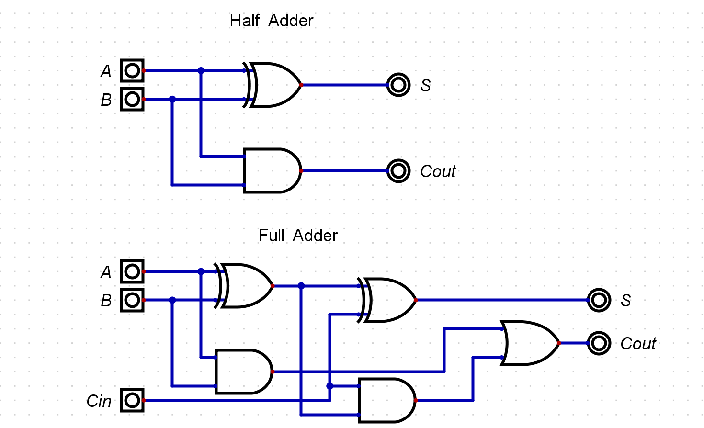
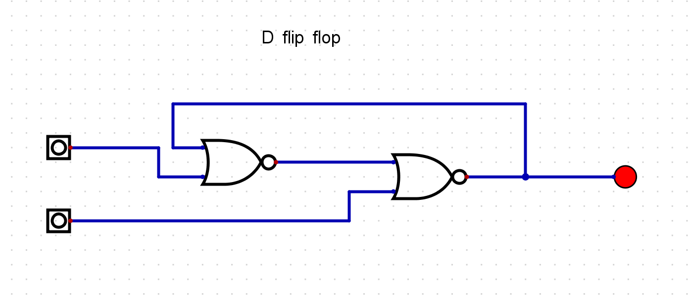
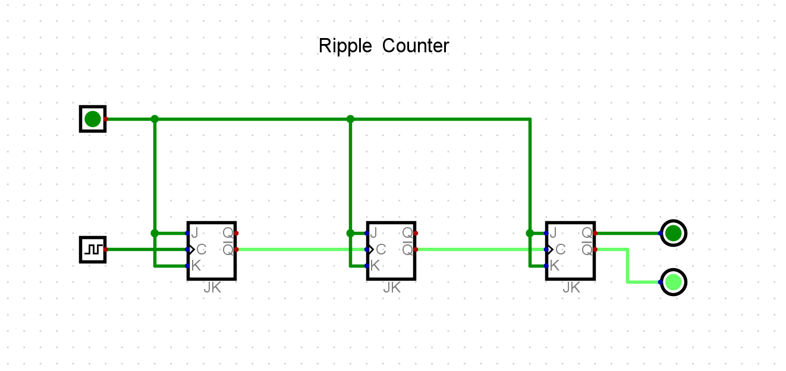

<!DOCTYPE html>
<html lang="en">
<head>
    <meta charset="UTF-8">
    <meta name="viewport" content="width=device-width, initial-scale=1.0">
    <meta http-equiv="X-UA-Compatible" content="ie=edge">
    <title>Document</title>
</head>

<body style= "background-color: black; ">
    
</body>

<h1 style= "color: rgb(89,187,243); text-align: center; ">Logism's N Such</h1>
<h2 style= "color: rgb(89,187,243); text-align: center; ">Well would yah look at that! we got here some college educated folks. using them's logism's to create circuitries.  </h2>

<style>
        .button {
          display: inline-block;
          border-radius: 4px;
          background-color: rgb(89,187,243);
          border: 2px solid rgb(255,255,255);
          color: #FFFFFF;
          text-align: center;
          font-size: 28px;
          padding: 20px;
          width: 200px;
          transition: all 0.5s;
          cursor: pointer;
          margin: 5px;
          width: 100%
        }
        
        .button span {
          cursor: pointer;
          display: inline-block;
          position: relative;
          transition: 0.5s;
        }
        
        .button span:after {
          content: '\00bb';
          position: absolute;
          opacity: 0;
          top: 0;
          right: -20px;
          transition: 0.5s;
        }
        
        .button:hover span {
          padding-right: 25px;
        }
        
        .button:hover span:after {
          opacity: 1;
          right: 0;
        }
</style>
<style>
        img {
          display: block;
          margin-left: auto;
          margin-right: auto;
        }
        </style>
        <a href="../Cis160B/index.html" class="button" style="vertical-align:middle"> Take Me Home</a>
<h2>Half and full Adders</h2>


<br>

<center><iframe width="560" height="315" src="https://www.youtube.com/embed/5-Cz2FzQVG0" 
    frameborder="0" allow="accelerometer; autoplay; encrypted-media; gyroscope; picture-in-picture" allowfullscreen></iframe></center>


<br>
<center><iframe width="560" height="315" src="https://www.youtube.com/embed/eLYaydMhJ6U" 
    frameborder="0" allow="accelerometer; autoplay; encrypted-media; gyroscope; picture-in-picture" allowfullscreen></iframe>
    </center>

<br>
<center><iframe width="1005" height="534" src="https://www.youtube.com/embed/H2iKt4SfihE" 
    frameborder="0" allow="accelerometer; autoplay; encrypted-media; gyroscope; picture-in-picture" allowfullscreen></iframe></center>


<br>
<center><iframe width="1005" height="534" src="https://www.youtube.com/embed/5wBf_FqLj-I" 
    frameborder="0" allow="accelerometer; autoplay; encrypted-media; gyroscope; picture-in-picture" allowfullscreen></iframe></center>


<br>
<center><iframe width="1005" height="534" src="https://www.youtube.com/embed/uCtysGKKbbE" class="center"
    frameborder="0" allow="accelerometer; autoplay; encrypted-media; gyroscope; picture-in-picture" allowfullscreen></iframe>
    </center>
<a href="../Cis160B/index.html" class="button" style="vertical-align:middle"> Take Me Home</a>


</html>